什么是RAID
RAID背景
在20世纪80年代末到90年代初期，公司在文件服务器上存储的数据量急剧增加。但是，通过添加更多高容量硬盘来增加服务器存储容量正变得越来越昂贵。需要一种更具成本效益的替代方案，RAID由加州大学伯克利分校的David Patterson，Garth Gibson和Randy Katz创建，以满足这一需求。
什么是RAID
RAID（独立磁盘冗余阵列）是一个允许将大量廉价硬盘链接在一起形成单个高容量存储设备的系统，与旧存储解决方案相比，可提供卓越的性能，存储容量和可靠性。
RAID如何实现
（1）、硬件RAID由磁盘连接的专用硬件控制器直接管理。RAID计算由板载处理器管理，该处理器减少主处理器CPU上的压力。然而，今天的CPU的性能已经增加了很多，这种优势已经或多或少地过时了。硬件控制器确实提供额外的故障保护元件及其BBU（电池备份单元），可在服务器意外断电时保护您的数据。
（2）、软件RAID是操作系统的一部分，是最简单，最具成本效益的实现。它不需要使用额外的（通常是昂贵的）硬件和专有固件。
RAID优势
（1）、冗余 - 在多个硬盘上的不同位置存储相同的数据可提供该数据的冗余，从而提高容错能力。这是为服务器环境开发RAID的最重要因素，因为它允许在磁盘发生故障时对阵列中的数据进行一种备份。如果磁盘发生故障，可以将其更换为新磁盘，或者可以使用现有的冗余磁盘而无需关闭系统。此功能称为热插拔。存在各种冗余方法，这取决于所使用的RAID的版本。
（2）、更高的性能 - 通过将数据放在多个磁盘上可以提高性能，以便I/O（输入/输出）操作可以以平衡的方式重叠。本质上，它是一种并行I / O处理形式，可将工作负载分散到多个磁盘上，从而提高性能。性能水平主要取决于所使用的RAID版本以及阵列和控制器中的磁盘数量，尽管还有其他因素也会影响阵列的性能。
（3）、增加容错 - 使用多个磁盘会增加MTBF（平均故障间隔时间），因此以这种方式冗余存储数据可提高容错能力。
（4）、降低成本 - 使用一些更小，更低可靠但更便宜的磁盘来等同于更昂贵的单个高容量磁盘的存储容量，从而降低成本。
什么是RAID级别
RAID物理卷显示为OS（操作系统）的单个逻辑硬盘磁盘。RAID技术利用称为磁盘条带化的方法将每个磁盘上的存储空间划分为逻辑单元，范围从512字节到几兆字节的单个扇区。阵列磁盘上的这些条带按顺序交错和寻址。这些条带化方法称为RAID级别。所以，RAID级别是指用于将数据放置在阵列中的磁盘上的特定单独技术或方法，而不是某种类型的渐进式层次结构，其中每个级别建立在前一级别上。
在1988年的RAID级别的初始定义中，定义了级别1到5。从那以后，增加了许多其他级别。在此片文章中将介绍标准RAID级别与嵌套RAID级别。
标准RAID级别
RAID 0：磁盘条带化
数据在两个或多个磁盘上均匀分割（或条带化），没有奇偶校验信息以实现冗余。RAID 0也称为条带集或条带卷，不是原始级别之一。这个级别的优点是提高了性能，因为更多的编写者和读者可以同时访问数据位。它还可以用作从大量小型物理磁盘创建少量大型逻辑磁盘的方法。虽然此级别可以使用不同大小的磁盘，但每个磁盘添加到阵列的存储空间仅限于最小磁盘的大小。这个级别的缺点是缺乏数据冗余。单个磁盘的故障会导致数据丢失。此级别对于大型只读NFS服务器等应用程序非常有用。
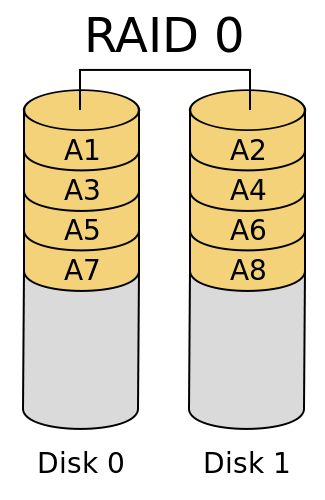
RAID 1：磁盘镜像
数据写入两个磁盘，创建数据集的精确副本（或镜像）。两个磁盘都是没有主磁盘或主磁盘的对等磁盘。此配置提供快速读取操作，因为同时从两个磁盘读取数据，但由于写入操作执行两次，因此写入操作较慢。此配置的优点是，如果一个磁盘发生故障，第二个磁盘将继续运行，不会中断数据可用性，并且不会丢失数据.此级别的缺点是成本，因为它需要两倍的镜像磁盘空间，并且它不提供数据损坏保护，既不会意外更改文件，也不会删除任何其他数据特定的更改，因为这些更改会立即镜像到数组段中的每个磁盘。此外，存储容量仅与最小的磁盘一样大。此级别对于需要高性能和高可用性的应用程序（如电子邮件和操作系统等事务性应用程序）非常有用。
RAID 2：使用汉明码ECC（纠错码）进行位级别条带化
数据在位级别进行拆分，并分布在多个数据磁盘和冗余磁盘上。控制器使磁盘同步以相同的角度方向旋转，以便它们同时到达Index。这提供了高数据传输速率和容错能力。这是唯一的标准级别，除了RAID 6的某些实现，它可以自动从单个位损坏中恢复准确的数据。硬盘磁盘中汉明纠错码的实现使其过时，不再使用此级别。
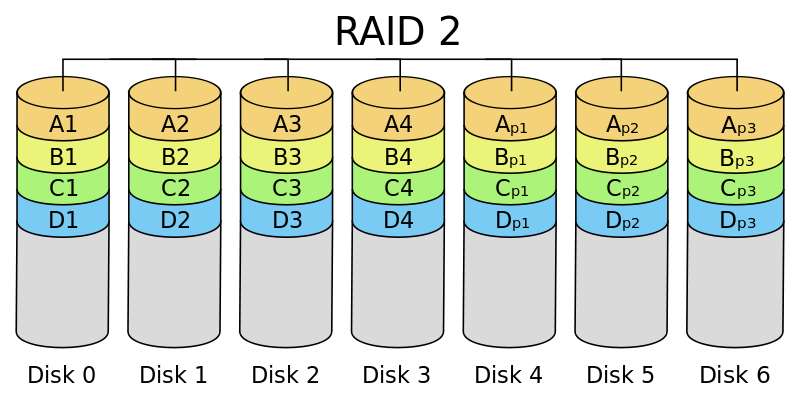
RAID 3：虚拟磁盘块
数据在字节级别跨多个磁盘进行条带化，并使用专用奇偶校验磁盘计算和存储奇偶校验信息。奇偶校验本质上是一种二进制数学形式，它比较两个数据块，然后根据前两个数据形成第三个数据块。此级别的优点是良好的容错能力，因为如果磁盘发生故障，所有数据仍然完全可用。缺点是性能，因为它通常不能同时处理多个请求，因为任何单个数据块将分布在同一位置的集合的所有成员中。因此，任何I / O（输入/输出）操作都需要在每个磁盘上进行活动。这个级别已经过时，很少在实际应用中使用。
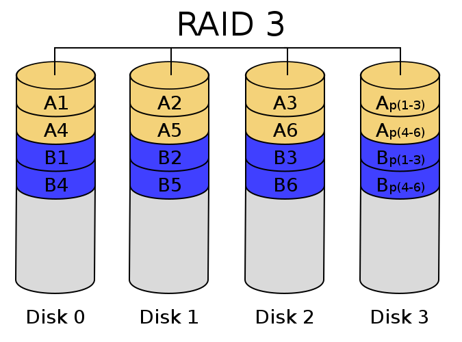
RAID 4：专用奇偶校验磁盘
数据在块级别跨多个磁盘进行条带化，具有专用奇偶校验磁盘并添加了高速缓存以提高读写性能。优点是该级别提供比RAID 3更高的性能，因为它允许集合中的每个成员在仅请求单个块时独立地动作。如果控制器允许，则该组可以同时为多个读取请求提供服务。它还提供良好的容错能力，因为在磁盘发生故障时数据仍然完全可用。缺点是在写入操作中，奇偶校验磁盘可能成为会降低性能的瓶颈。
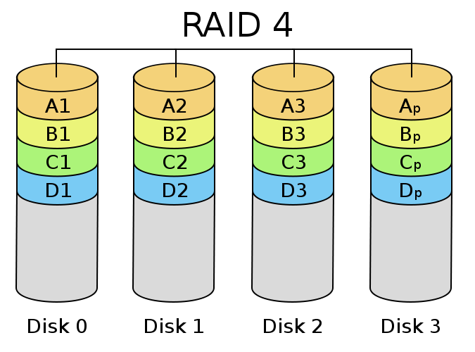
RAID 5：条纹奇偶校验
数据在块级别进行条带化，奇偶校验数据分布在阵列中的所有成员磁盘上，这些磁盘解决了RAID 4中的写入限制。这与添加了旋转奇偶校验保护的RAID 4相同。虽然RAID 5不存储冗余数据，但奇偶校验信息可用于重建数据。这一级别的优势在于它通过消除单一奇偶校验磁盘瓶颈来平衡数据可用性和读/写性能，同时提供比RAID 4更高的性能。缺点是磁盘重建期间可能会出现性能下降，并且每个RAID组需要三到五个磁盘。此级别适用于文件共享和Web应用程序等读取密集型应用程序。
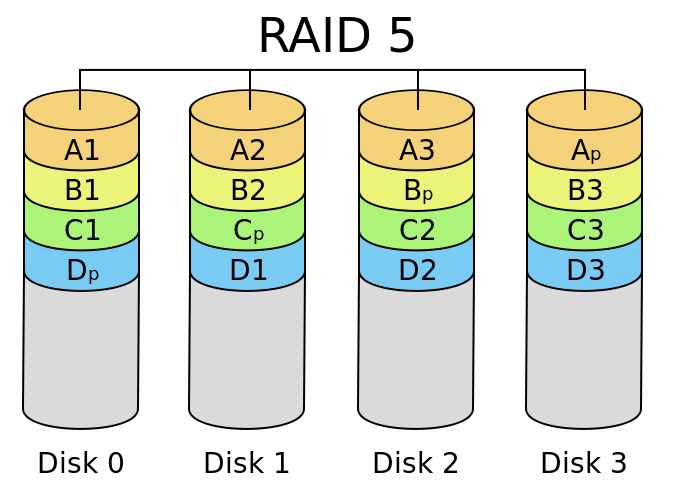
RAID 6：双奇偶校验
此级别与RAID 5相同，但添加了第二个奇偶校验磁盘，可在磁盘重建期间防止第二个磁盘故障。数据在块级别进行条带化，两个奇偶校验块分布在所有成员磁盘上。这一级别的优势是增加了数据保护。如果两个磁盘发生故障，则仍然可以使用完整的数据集。缺点是多磁盘奇偶校验计算和磁盘重建期间的成本和性能。虽然读操作性能非常好，但由于与奇偶校验计算相关的开销，写操作性能受到影响。性能将根据RAID 6在制造商的软件，固件和专用ASIC的存储架构实现中如何实施以进行密集奇偶校验计算而有很大差异。
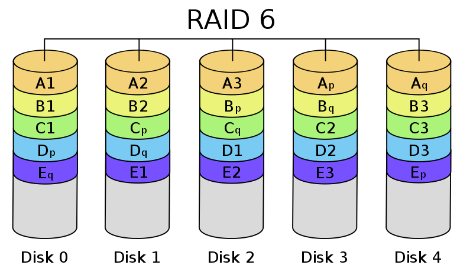
嵌套RAID级别（又称混合RAID）
什么是嵌套RAID级别
他们本质上是RAID类型的组合，它为RAID 0提供冗余以提高性能。高级存储控制器可以实现这些组合，允许嵌套RAID级别。RAID元素可以是单个磁盘，也可以是RAID阵列。由于没有编号高于9的基本RAID级别，嵌套RAID通常通过附加指示组合的基本RAID级别的数字来描述。数字可以一起运行或用+号分隔。列出数字的顺序表示嵌套数组的构建方式。最终的RAID数字称为顶部数组。大多数供应商在顶部阵列是RAID 0时都省略了+符号，如RAID 10等。虽然使用了不同的命名约定，但通常名称遵循“从下到上”的约定。首先列出“底部”阵列类型，而加入底层阵列的RAID类型（通常提供冗余）列在第二个甚至第三个，如RAID 100的情况。因此，在RAID 50配置中，您知道它至少包含两个由RAID 0连接的RAID 5阵列。在提供冗余的RAID类型与RAID 0结合以提高性能的配置中，最好将RAID 0置于顶层，将冗余阵列置于底层，因为在磁盘发生故障时需要更少的磁盘进行重新生成。嵌套RAID级别为0 + 1（01），1 + 0（10），0 + 3（某些制造商03也称为53），3 + 0（30），0 + 5（05），5 + 0（50），1 + 5（15）和5 + 1（51也被一些制造商称为53）和RAID 60。
RAID 0 + 1（又名RAID 01 - 不要与RAID 1混淆）
数据在多个磁盘上以条带形式组织，然后镜像条带磁盘集。这种混合形式的RAID由一些制造商实施，试图提供两个版本中的每一个的优点。通常，这只能在最少4个磁盘的系统上实现。数据在第一对活动磁盘上条带化，而第二组磁盘是前两个磁盘上数据的镜像。此配置被视为RAID 10的子类型，但它不够强大，并且不能容忍两个同时发生的磁盘故障，除非第二个故障磁盘来自与第一个相同的条带。此外，更换发生故障的磁盘后，阵列中的所有磁盘都必须参与重建数据，除非所有磁盘都连接到同一个控制器。在这种情况下，控制器可以执行与RAID 10相同的错误恢复，因为它可以访问每个RAID 0集中的功能磁盘。在该特定情况下，0 + 1和RAID 10之间没有区别。
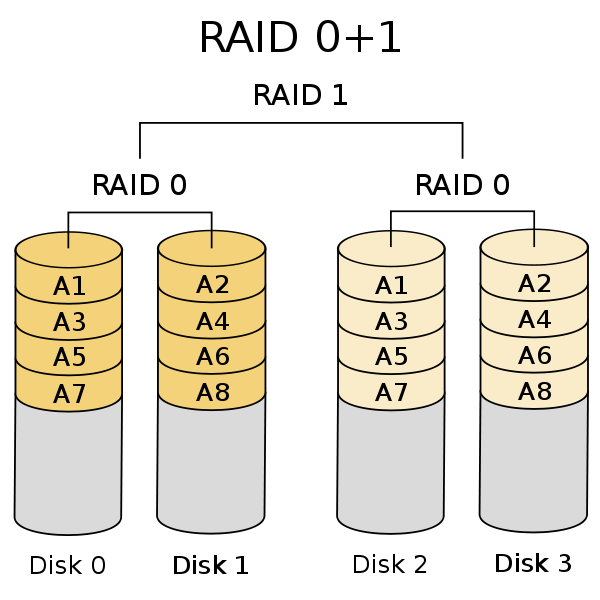
这种配置的优点是通过多个条带段实现了更高的性能，并且具有与RAID 5相当的高容错性。
缺点是复杂性增加，需要大量磁盘，有效数据容量减半，单个磁盘故障将导致整个阵列成为RAID 0级阵列，并且成本有限，可扩展性有限。此外，误码修正技术已经落后于快速增加的驱动能力，这意味着遇到媒体错误的风险更高。如果在0 + 1配置中未更换发生故障的磁盘，则镜像磁盘上发生的单个不可纠正的介质错误将导致数据丢失。
RAID 10（又名1 + 0）
与0 + 1类似，但在此配置中，前两个磁盘是镜像的。第二对磁盘也镜像在一起，但也存储第一对的条带数据。与0 + 1设置一样，RAID 10至少需要四个硬盘才能运行。虽然性能与0 + 1配置非常相似，但数据受到更多保护。但与0 + 1配置的情况一样，如果在RAID 10设置中未更换故障磁盘，则镜像磁盘上发生的单个不可纠正的介质错误也会导致数据丢失。各种RAID 10供应商支持“热备用”磁盘，可自动更换和重建故障磁盘以解决此问题。
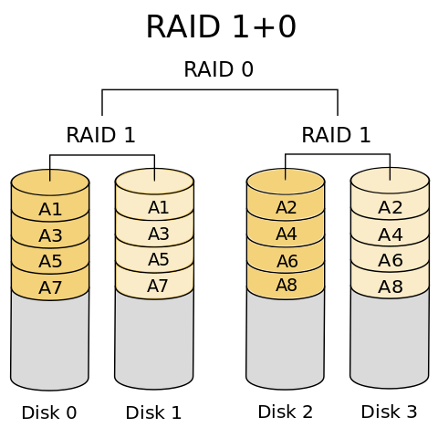
此配置的优点是提高了性能和数据冗余。
缺点是需要大量磁盘，有效数据容量减半，并且以非常高的成本具有有限的可扩展性。
RAID 30（又名0 + 3,03和53）
此特定配置具有任何RAID级别最令人困惑的命名约定，其中53通常用于代替0 + 3。为了进一步混淆问题，RAID 53通常实现为3 + 0。因此，有必要验证其实施细节，以确保您拥有的内容。0 + 3和3 + 0都将字节条带与奇偶校验和块条带化相结合，以创建非常大的数组。0 + 3由多个条带化RAID 0阵列形成为RAID 3阵列。
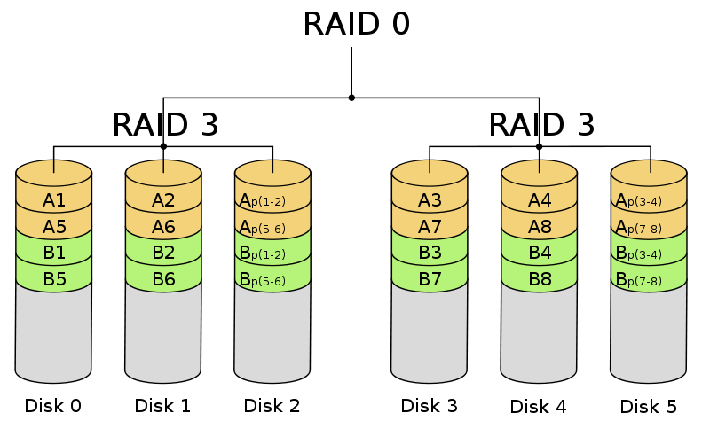
RAID 30（3 + 0）是更常见的实现，是RAID级别3和0的组合。它是跨条带磁盘的专用奇偶校验阵列，RAID 3级别的每个数据块在RAID 0之间被分解数组在磁盘上条带化的数组。该级别也称为专用奇偶校验阵列的条带化。首选的RAID 30实现在两个RAID 3阵列上，两个阵列之间都有数据条带。然后，RAID 3将数据分解为更小的块，并通过对块执行XOR（异或）然后将块写入阵列中的所有磁盘来计算奇偶校验。先前的XOR计算的奇偶校验位被写入每个RAID 3阵列中的最后一个磁盘。块大小由创建RAID时设置的条带大小参数确定。
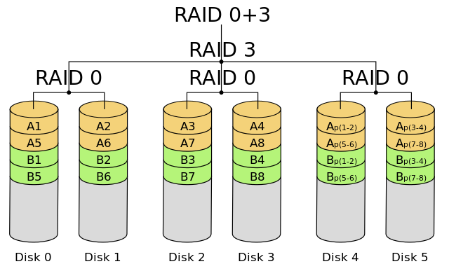
与0 + 3相比，30配置提供了更好的容错能力和重建性能，但两者都取决于相对于RAID 0维度的RAID 3磁盘维度的宽度。换句话说，奇偶校验驱动越多，容量和存储效率越低，但容错性越大。虽然大多数特性或03和30类似于05和50，但对于大文件大小，RAID 30和03往往更好。使用RAID 30代替RAID 3来提高性能和容量.
优点是高容错性，对随机和顺序读取以及顺序写入具有非常好的性能。
由于需要大量磁盘和硬件控制器，缺点是高度复杂，实现成本高。
RAID 5 + 0（又称RAID 50）
RAID 50是RAID 0直接块级条带化与RAID 5的分布式奇偶校验的组合.RAID 0阵列在RAID 5元素上条带化，需要至少六个磁盘。与其他类似配置一样，来自每个RAID 5集的一个磁盘的故障不会导致数据丢失。但是，如果未更换发生故障的磁盘，则该组中的其余磁盘将成为整个阵列的单点故障。如果此时另一个磁盘发生故障，则整个阵列上存储的所有数据都将丢失。因此，在检测到故障磁盘，更换以及重新安装到新更换的磁盘的过程中，RAID集非常容易受到攻击。阵列的容错受RAID组配置的影响。具有三个七驱动RAID 5集的配置将具有更高的容量和存储效率，但它最多只能容忍三个潜在的磁盘故障。由于系统的可靠性依赖于快速更换故障磁盘以便阵列可以重建，因此通常构建三个六磁盘RAID 5组，每组具有热备用以允许立即开始重建。但是，这并没有解决阵列在最大应变读取的情况下的问题，以便在最容易受到攻击时重建阵列。七个磁盘RAID 5组合可以处理多达七个磁盘故障，但代价是降低容量和存储效率。由于系统的可靠性依赖于快速更换故障磁盘以便阵列可以重建，因此通常构建三个六磁盘RAID 5组，每组具有热备用以允许立即开始重建。但是，这并没有解决阵列在最大应变读取的情况下的问题，以便在最容易受到攻击时重建阵列。七个磁盘RAID 5组合可以处理多达七个磁盘故障，但代价是降低容量和存储效率。由于系统的可靠性依赖于快速更换故障磁盘以便阵列可以重建，因此通常构建三个六磁盘RAID 5组，每组具有热备用以允许立即开始重建。但是，这并没有解决阵列在最大应变读取的情况下的问题，以便在最容易受到攻击时重建阵列。七个磁盘RAID 5组合可以处理多达七个磁盘故障，但代价是降低容量和存储效率。但是，这并没有解决阵列在最大应变读取的情况下的问题，以便在最容易受到攻击时重建阵列。七个磁盘RAID 5组合可以处理多达七个磁盘故障，但代价是降低容量和存储效率。但是，这并没有解决阵列在最大应变读取的情况下的问题，以便在最容易受到攻击时重建阵列。七个磁盘RAID 5组合可以处理多达七个磁盘故障，但代价是降低容量和存储效率。
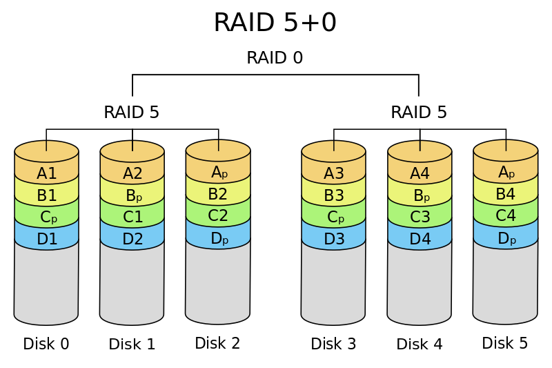
优点是高性能，高容错性和快速随机定位性能。
缺点是高奇偶校验开销，所有磁盘轴必须通过同步限制磁盘的选择，实现起来非常昂贵。一个RAID 5段中的两个磁盘发生故障会导致整个阵列无法使用。
RAID 5 + 1（RAID 51）
此配置包含两个镜像的RAID 5阵列。通常使用此配置，以便每个RAID 5阵列驻留在单独的控制器上。在此配置中，读取和写入在两个RAID 5阵列之间均衡。有一些控制器支持跨多个通道的RAID 51和带有提示的卡，以保持不同的切片同步。RAID 51也可以使用分层RAID技术来完成，其中两个RAID 5阵列不知道它们是彼此的镜像，并且RAID 1阵列不知道它的底层磁盘是RAID 5。此配置可以承受任一阵列中所有磁盘的故障，并且在数据丢失之前最多可以承受另一个阵列中的一个额外磁盘。
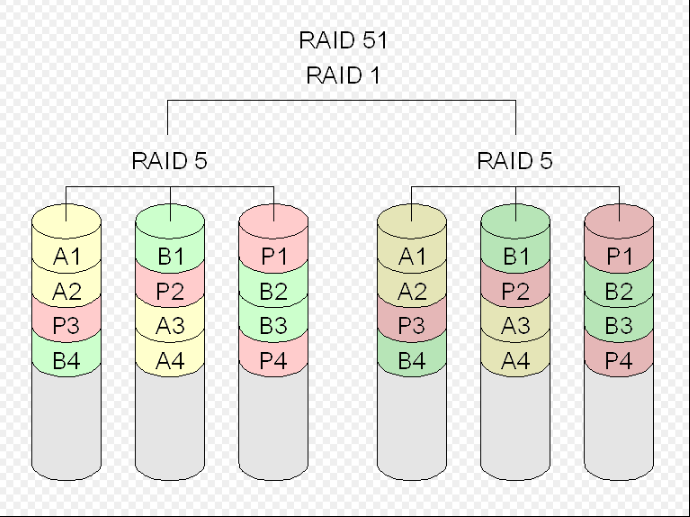
需要具有至少六个相同磁盘的偶数个硬盘磁盘。
优点是高容错性和高可用性，良好的性能，但需要付出代价。
缺点是实施成本高，因为需要大量相同的磁盘以及高端控制器，高度复杂，容量相对较低。
RAID 60（又名6 + 0)
此级别将RAID 0直接块级条带化与RAID 6的分布式双奇偶校验相结合。换句话说，它是跨RAID 6元素划分的RAID 0阵列，并且至少需要八个磁盘才能实现。在此配置中，每个RAID 6集中的两个磁盘可能会在没有数据丢失的情况下发生故障。此外，在一个RAID 6集中重建单个磁盘时磁盘故障不会导致数据丢失。尽管RAID 6的性能有所提升，但在写入方面略差于RAID 50。这是由于更多奇偶校验计算的额外开销。但是，当数据安全性成为主要关注点时，这种性能下降可以忽略不计。
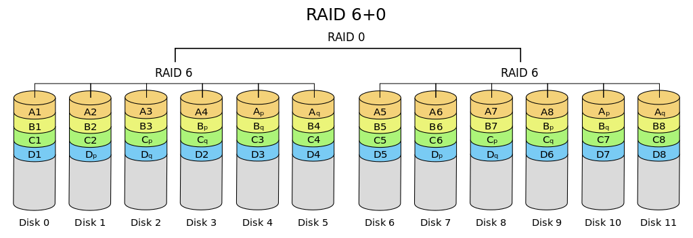
优点是非常高的容错性和可用性。
缺点是成本高且性能低。
RAID 100（又名1 + 0 + 0或10 + 0）
此配置是RAID 10s的条带。这与更广泛的RAID 10阵列相当。它通常利用硬件RAID 10上的软件RAID 0来实现。由于它是两种方式的条带，RAID 100有时被描述为“格子RAID”。此配置的故障特征与RAID 10相同。因此，每个RAID 1集中除一个磁盘外的所有磁盘都可能会发生故障而不会丢失任何数据。但是RAID 1阵列的剩余磁盘在降级阵列中成为单点故障。顶级条带通常在软件中完成，并由各种供应商称为Soft Stripe或MetaLun。对于VLDB（超大型数据库）应用程序而言，它是一个非常好的选择，其中硬件RAID控制器限制每个标准阵列中允许的物理磁盘数量。它将负载分散到多个RAID控制器上，特别是在减轻阵列上的热点风险的同时，大大提高了随机读取性能。
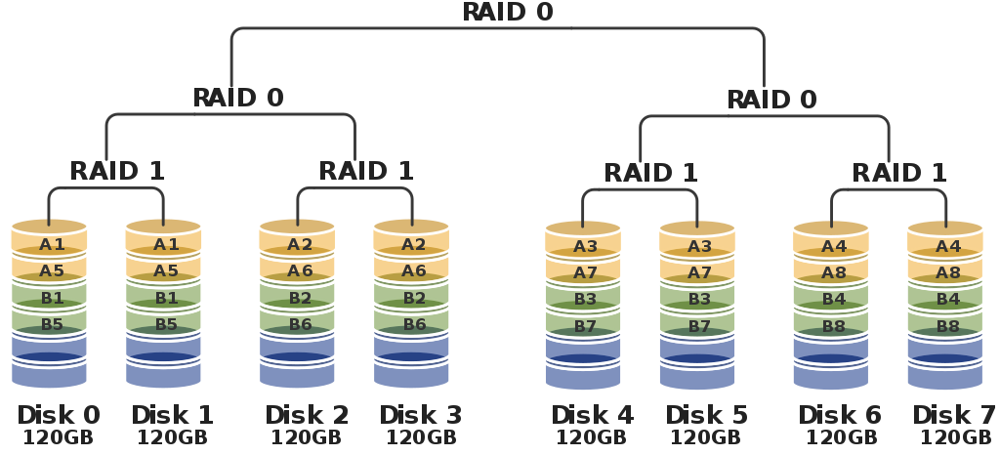
优点是高性能和高容错性。
缺点是实施起来很昂贵，复杂性很高。
非标准RAID级别
什么是非非标准RAID级别
在基本编号RAID级别之外的许多配置，并且有许多公司，组和组织已创建自己的自定义或非标准RAID配置。在大多数情况下，这些非标准配置旨在满足特定群体的特殊需求，因此，大多数非标准RAID级别都是专有的。
RAID-DP（双奇偶校验，对角奇偶校验）
一旦被归类为非标准配置，由于SNIA最近的更新，它现在是RAID 6的一部分。最初它是NetApp Data ONTAP操作系统的标准功能，并与其WAFL（随处写入文件布局）文件系统集成，以保护数据免受双磁盘故障的影响，同时提供高性能。它是RAID 6的一种变体，但与许多RAID 6实现不同，它不使用像RAID 5这样的分布式奇偶校验。相反，它使用两个独特的奇偶校验磁盘，并具有单独的奇偶校验计算。基本上它是一个带有额外奇偶校验磁盘的修改后的RAID 4。文件系统请求首先写入电池供电的NVRAM，以防止系统电源故障时数据丢失。当存储控制器尝试仅写入包括两个奇偶校验块的完整条带时，块不会就地更新并且聚合写入。此配置可提供更好的数据保护和性能等于或优于RAID 10.此外，在大多数情况下，此配置避免了传统RAID 6更新块的挑战，同时通过更多磁盘传播读取和写入，而不是相当大小的RAID 6组。
RAID 1.5（有时被误认为是RAID 15）
HighPoint的专有RAID配置，使用两个硬盘磁盘执行数据条带化和镜像。从两个磁盘同时读取数据，大部分工作在硬件而不是驱动程序中执行。这就像Solari和Linux的RAID 1实现一样，它也同时从两个磁盘读取。
RAID 1E（混合镜像，条带镜像，增强镜像，具体取决于供应商）
它将RAID 0的条带化功能与RAID 1的镜像保护相结合。它通过在阵列中的所有磁盘上条带化数据来实现，如RAID 0。与0级和1级不同，RAID 1E至少需要三个磁盘才能提供数据保护。和RAID 1一样，它也有50％的磁盘容量开销。
RAID 5E（IBM ServRAID）
E代表增强。这是一种RAID 5变体，其中5E阵列具有在阵列操作中主动使用的热备份，这与传统的RAID 5配置不同，在传统的RAID 5配置中，热备份处于空闲状态，直到阵列磁盘发生故障。虽然此增强配置在阵列中提供了额外的磁盘，可进一步分配阵列的I / O负载并提高性能，但主机备用无法在阵列之间共享，并且重建时间可能较慢。RAID 5E至少需要四个磁盘。如果磁盘在5E阵列中发生故障，则故障磁盘上的数据将在阵列末尾的空白区域重建。本质上，阵列压缩阵列并将其重新条带化为标准RAID 5阵列。更换故障磁盘后，阵列将再次展开，以使阵列返回其原始状态。
此过程可能非常耗费I/O，需要数小时或数天，具体取决于大小，速度和磁盘数量。只有在压缩之后，系统才能防止在第二次磁盘发生故障时丢失数据。另一个关键的缺点是，目前还没有很多控制器支持RAID 5E。
RAID 5EE
与RAID 5E类似，关键区别在于热备用容量已集成到条带集中。在整个RAID 5EE阵列中交错空间的结果是它提供了比在5E下更快的重建时间，其中空的空间被容纳在阵列的末端。它具有与5E相同的限制，包括支持此配置的有限数量的控制器。
RAID 6E
与5E和5EE类似，没有专用的备用磁盘或奇偶校验磁盘。备用块分布在所有磁盘上，如5E，备用块位于阵列的末端，而不是像5E一样集成到阵列中。它也分享了5E的大部分限制。
RAID-K
与双奇偶校验RAID 4类似，此专有配置用于Kaleidescapes的KSERVER 1500和5000系统媒体存储单元。系统很容易修改，插入阵列的硬盘磁盘上的任何现有数据都会自动添加到阵列中，而不是按照许多其他RAID方法的要求删除数据。
RAID TP（三重奇偶校验）
Accusys的专有配置包括具有三重分布式奇偶校验的磁盘条带化。它类似于RAID 5和6，因为它跨磁盘对数据进行条带化，但它计算三个奇偶校验，然后写入三个不同的磁盘。
RAID-Z
这实际上不是一种RAID，而是一种高级软件解决方案，使用Sun的ZFS实现类似于RAID 5的集成冗余方案。它通过使用写时复制策略避免了RAID 5“写漏洞”问题，而不是覆盖旧数据，将新数据写入新位置，然后覆盖指向旧数据的指针。这通过仅执行全条带写入来避免对小写入的读取 - 修改 - 写入操作的需要。镜像小块是镜像而不是奇偶校验保护，这是可能的，因为文件系统知道底层存储结构，因此它可以在必要时分配额外的空间。
英特尔快速存储技术（又称Intel Matrix RAID）
这实际上是ICH6R和英特尔随后的南桥芯片组中的一个功能，而不是RAID级别。可通过RAID BIOS访问。它支持少至两个物理磁盘或控制器支持的数量。它的显着特点是它允许阵列中的任何类型的RAID 0,1,5和/或10卷，每个磁盘的可控且相同的部分被分配给该卷。
Linux MD RAID 10
Linux内核软件RAID驱动程序（称为md）可用于构建经典的RAID 1 + 0阵列，但它也只有一个级别，具有非常有趣的扩展。标准的“近”布局，其中每个块在k -way条带阵列中重复n次，相当于标准RAID 10排列，但不要求n除k。该驱动程序还支持“远”布局，其中所有磁盘分为f个部分。所有块在每个部分中重复，但由一个设备偏移。设计用于很少写入的数据，写入速度较慢，因为它们是分散的，但是第一个1/f每个磁盘的标准RAID 0阵列。near和far选项可以同时使用。
UnRAID（unRAID）
这是Lime Technology LLC开发的专有方案。与许多其他方案不同，它不要求RAID阵列中的磁盘具有匹配的大小或速度。与大多数软件RAID实施一样，它也支持在同一RAID集中混合PATA和SATA磁盘。UNRAID使用专用的奇偶校验磁盘，不会跨越其他阵列磁盘对数据进行条带化。数据磁盘保持正常的reiserfs格式，但“智能”奇偶校验磁盘模拟RAID 3和4中具有专用数据结构的功能条带化。根据奇偶校验和检查读校验和，如果不正确则重建。写入创建新的奇偶校验信息。如果同时发生多个磁盘故障，则只会丢失故障磁盘上的数据。奇偶校验仅在单个磁盘发生故障时提供数据恢复。
BeyondRAID
虽然不是真正的RAID扩展，但它可以将多达10个SATA磁盘整合到一个存储池中。它还具有同时支持多个磁盘大小的优点，就像JBOD一样，同时为所有磁盘提供冗余并允许随时进行热插拔升级。
驱动扩展器
Windows Home Server Drive Extender是在文件系统级别实现的JBOD RAID 1的专用案例，与Window的逻辑磁盘管理器中提供的内容分开。保存要复制的文件时，会在主存储磁盘的NTFS分区上创建一个名为“tombstone”的特殊指针，指向驻留在其他磁盘上的数据。当系统空闲时，OS会重新平衡存储，以便在最大化每个磁盘的存储容量的同时提供所需的冗余。虽然不像真正的RAID那样强大，但它提供了RAID的许多好处，包括文件系统的单一分层视图，无论数据存储在哪个物理磁盘上，以及在不丢失的情况下更换故障磁盘的能力冗余数据。